1과목: 중소기업관계법령
1. 소상공인 보호 및 지원에 관한 법령상 백년소상공인에 관한 설명으로 옳지 않은 것은?
2. 소상공인 보호 및 지원에 관한 법령상 소상공인시장진흥공단이 설치ㆍ운영하는 지역별 소상공인지원센터의 업무에 해당하지 않는 것은?
3. 소상공인 보호 및 지원에 관한 법률상 소상공인 불공정거래 피해상담센터의 업무에 해당하지 않는 것은?
4. 벤처투자 촉진에 관한 법령상 한국벤처투자에 관한 설명으로 옳은 것은?
5. 중소기업 기술혁신 촉진법령상 중소벤처기업부장관이 추진할 수 있는 중소기업의 국제기술협력 지원 사업에 해당하지 않는 것은?
6. 벤처투자 촉진에 관한 법령상 중소벤처기업부장관에게 개인투자조합으로 등록하려는 조합이 갖추어야 하는 요건을 모두 고른 것은?
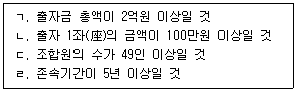
7. 중소기업 기술혁신 촉진법상 중소기업기술정보진흥원의 사업에 해당하지 않는 것은?
8. 벤처기업육성에 관한 특별법의 내용으로 옳지 않은 것은?
9. 중소기업 기술혁신 촉진법령상 기술연구회를 구성하고자 하는 자가 미리 중소벤처기업부장관에게 제출하여야 할 기술연구회구성계획서에 기재되는 사항이 아닌 것은?
10. 벤처기업육성에 관한 특별법령상 벤처기업확인에 관한 설명이다. ( )에 들어갈 내용은?
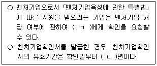
11. 벤처기업육성에 관한 특별법령상 국토의 계획 및 이용에 관한 법률 시행령 제30조에 따른 지역 중 벤처기업집적시설을 건축할 수 없는 지역끼리 묶은 것은?
12. 중소기업진흥에 관한 법률상 정의 규정의 일부이다. ( )에 들어갈 용어는?
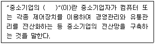
13. 중소기업진흥에 관한 법령상 중소기업가업승계지원센터(이하 '지원센터'라 한다)에 관한 설명으로 옳지 않은 것은?
14. 중소기업진흥에 관한 법률상 중소기업자의 원활한 협업 수행을 위하여 정부가 할 수 있는 지원사업을 모두 고른 것은?
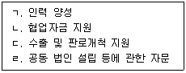
15. 중소기업제품 구매촉진 및 판로지원에 관한 법률상 중소기업제품의 성능인증에 관한 설명으로 옳지 않은 것은?
16. 중소기업제품 구매촉진 및 판로지원에 관한 법령상 기술개발제품 시범구매제도에 관한 설명으로 옳지 않은 것은?
17. 소상공인기본법령상 소상공인정책심의회(이하 '심의회'라 한다)에 관한 설명으로 옳은 것은?
18. 소상공인기본법령상 소상공인이 규모의 확대 등으로 소상공인에 해당하지 아니하게 되었더라도 그 사유가 발생한 연도의 다음 연도부터 3년간은 소상공인으로 보는 경우가 아닌 것(소상공인 지위 유지의 제외)으로 규정된 것을 모두 고른 것은?
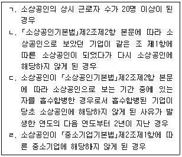
19. 중소기업 인력지원 특별법령상 정부가 인력구조 고도화사업계획(이하 '인력고도화 계획'이라 한다)의 시행에 드는 경비의 일부를 지원할 수 있는 요건에 해당하지 않는 것은?
20. 중소기업 인력지원 특별법령상 중소기업의 인력지원을 받을 수 있는 업종은? (단, 업종의 분류는 한국표준산업분류를 기준으로 함)
21. 중소기업 사업전환 촉진에 관한 특별법령상 중소벤처기업부장관이 중소기업사업전환지원센터를 설치ㆍ운영하는 중소기업지원기관이나 단체(지원센터설치ㆍ운영법인)의 장에게 위탁하는 업무가 아닌 것은?
22. 중소기업 사업전환 촉진에 관한 특별법령에 관한 설명으로 옳은 것은?
23. 중소기업 사업전환 촉진에 관한 특별법령상 사업전환에 해당하는 하나의 경우이다. ( )에 들어갈 숫자는?
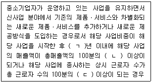
24. 중소기업기본법령상 중소기업의 요건에 관한 규정의 일부이다. ( )에 들어갈 숫자는?
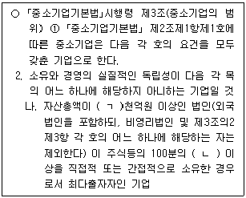
25. 중소기업기본법령상 중소기업 옴부즈만에 관한 설명으로 옳지 않은 것은?
2과목: 회계학개론
26. (주)한국은 제품 A와 B를 생산ㆍ판매한다. 두 제품의 월간 예상판매 및 원가자료는 다음과 같다.
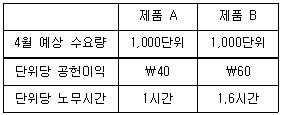
27. (주)한국은 사업부 A와 B로 구성되어 있다. 사업부 A는 생산한 부품을 외부시장에 판매하거나 사업부 B에 내부대체할 수 있다. 사업부 B도 사업부 A의 부품을 내부대체 받거나 외부에서 구입할 수 있다. 사업부 A에서 생산되는 부품과 관련된 자료는 다음과 같다.
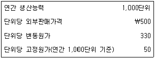
28. (주)한국은 결합공정을 통해 3가지 제품을 생산ㆍ판매하고 있으며, 균등매출총이익률법을 적용하여 결합원가를 배부한다. (주)한국은 20×1년에 결합제품 3가지를 모두 추가가공하여 전량 판매하였으며, 추가가공원가는 각 제품별로 추적 가능하고 모두 변동원가이다. (주)한국의 생산ㆍ판매 관련 자료는 다음과 같다.
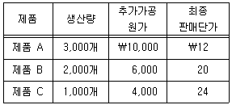
29. (주)한국의 당기 제품판매수량 4,500개, 제품의 단위당 판매가격 ￦100, 단위당 변동제조원가 ￦40, 단위당 변동판매관리비 ￦10이며, 당기 총고정제조간접원가는 ￦100,000이다. 전부원가계산상의 영업이익이 변동원가계산상의 영업이익보다 ￦10,000 많다면, 당기의 제품생산수량은? (단, 기초재공품, 기말재공품 및 기초제품은 없다.)
30. (주)한국은 20×1년 1월 1일 임대목적으로 신축건물(취득원가 ￦5,000, 잔존가치 ￦0, 내용연수 20년, 정액법 감가상각)을 취득하였으며, 20×1년 12월 31일 공정가치는 ￦4,900이다. 동 건물에 공정가치모형을 적용할 경우, 회계처리와 관련된 당기손익은?
31. (주)한국은 선입선출법에 의한 종합원가계산제도를 채택하고 있다. 직접재료는 공정 초에 전량 투입되고 전환원가는 공정전반에 걸쳐 균등하게 발생한다. (주)한국의 생산자료는 다음과 같다.
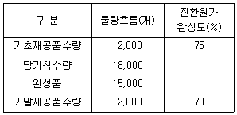
32. (주)한국은 20×1년 1월 1일 신축건물 도급계약을 ￦5,000에 수주하였고, 20×2년 12월 31일 동 건물을 완공하고 즉시 인도하였다. 건물 공사 계약시 계약원가가 ￦4,000이 될 것으로 예상하였고, 실제 계약원가의 지출과 대금회수는 다음과 같다.
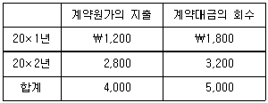
33. (주)한국은 (주)민국의 지분 100%에 대해 현금 ￦700을 지급하고 인수합병하였다. 합병일 현재 (주)민국의 식별가능한 자산과 부채의 장부금액과 공정가치가 다음과 같을 때, (주)한국이 인식할 영업권 혹은 염가매수차익은?
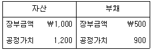
34. (주)한국의 재무상태표 자료의 일부가 다음과 같을 때, 비유동부채의 합계는?
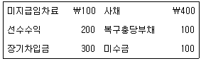
35. (주)한국은 20×1년 1월 1일 토지를 ￦10,000에 구입하고, 매년 재평가모형을 적용하고 있다. 이 토지의 공정가치는 다음과 같다.
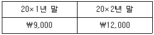
36. (주)한국은 보통주 10주(주당 액면금액 ￦1,000, 주당 발행가액 ￦1,200)를 ￦9,000에 재취득하고, 이를 소각하였다. (주)한국이 보통주 소각과 관련하여 포괄손익계산서에 인식할 손익은? (단, 자기주식의 소각은 자본금의 감소로 가정한다.)
37. 리스이용자가 리스개시일에 사용권자산을 측정할 때, 원가에 가산될 구성항목이 아닌 것은?
38. 포괄손익계산서에 표시되는 비용의 분류방법에 관한 설명으로 옳은 것은?
39. (주)한국은 20×1년 1월 1일 사채(액면금액 ￦10,000, 만기 3년)를 발행하고, 다음과 같이 회계처리 하였다.
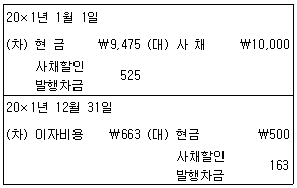
40. (주)한국의 재무상태표에 표시된 내용이 다음과 같을 때, 기타포괄손익누계액의 합계는?
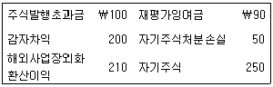
41. 재무제표 표시의 일반사항에 관한 설명으로 옳지 않은 것은?
42. 다음 자료를 이용할 때, 자기자본이익률(ROE)은?
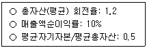
43. 회계변경에 관한 설명으로 옳은 것은?
44. (주)한국은 20×1년 4월 1일 향후 12개월 분 임대료 ￦120,000을 전액 현금으로 수취하고 선수수익으로 기록하였다. 20×1년 말 수행할 수정분개는?
45. 다음 설명에 해당하는 재무정보의 질적특성은?
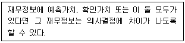
46. 현금흐름표 작성에 필요한 자료가 다음과 같을 때, 영업에서 창출된 현금은? (단, 간접법을 적용한다.)
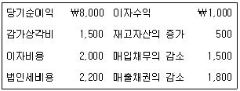
47. 회계감사에 관한 설명으로 옳지 않은 것은?
48. (주)한국의 재고자산에 관한 자료는 다음과 같다.
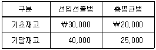
49. (주)한국의 20×2년 매출채권 내역은 다음과 같다.
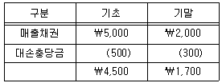
50. 일반목적 재무보고서가 제공하는 정보로 볼 수 없는 것은?
3과목: 경영학
51. 통계지식을 활용하여 제품의 품질개선뿐만 아니라 제품설계에서부터 출하까지 경영전반을 대상으로 혁신을 추구하는 전략은?
52. e-비즈니스 유형에 관한 설명으로 옳지 않은 것은?
53. 캐롤(A. Carroll)의 피라미드식 모형에서 기업의 사회적 책임을 하위단계부터 순서대로 나열한 것은?
54. 리스트럭처링의 방법으로 옳지 않은 것은?
55. 기업의 외부환경을 일반환경과 과업환경으로 구분할 때 과업환경에 해당하지 않는 것은?
56. 유동자산 10억원, 고정자산 20억원, 재고자산 5억원, 유동부채 5억원일 때, 당좌 비율은?
57. 주식회사에 관한 설명으로 옳지 않은 것은?
58. 경영학에 관한 설명으로 옳지 않은 것은?
59. 포터(M. Porter)가 제시한 산업매력도 분석 요소로 옳은 것을 모두 고른 것은?
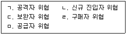
60. 경영전략 등에 관한 설명으로 옳지 않은 것은?
61. 의사결정에 관한 설명으로 옳지 않은 것은?
62. 다음 각각의 통제 방법을 순서대로 나열한 것은?
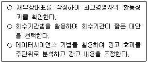
63. 리더-구성원의 관계, 과업구조, 리더 지위권력 등의 변수로써 리더십 유형을 설명한 이론은?
64. 동기부여에 관한 설명으로 옳지 않은 것은?
65. 조직구조에 관한 설명으로 옳지 않은 것은?
66. 직무에 관한 설명으로 옳은 것은?
67. 기업이 사회적 가치를 창출하면서 동시에 경제적 수익을 추구하는 개념은?
68. 신제품에 대한 스키밍 가격전략(skimming pricing)이 효과적인 경우가 아닌 것은?
69. 재고관리에 관한 설명으로 옳지 않은 것은?
70. 기업의 자재, 회계, 구매, 생산, 판매, 인사 등 모든 업무의 흐름을 효율적으로 지원하기 위한 통합정보시스템은?
71. 제품전략에 관한 설명으로 옳은 것을 모두 고른 것은?
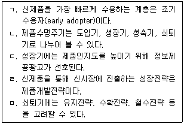
72. PERT/CPM에서 주경로(critical path)에 관한 설명으로 옳은 것은?
73. 카르텔에 관한 설명으로 옳지 않은 것은?
74. 경영학의 현대적 접근법으로서 상황이론에 관한 설명으로 옳지 않은 것은?
75. 경영자 및 경영층에 관한 설명으로 옳지 않은 것은?
4과목: 기업진단론
76. 기업부실예측방법 중 단일변량기준 모형은?
77. (주)산단의 20×4년 1년간 매출관련 자료이다. 손익분기점(BEP)매출액과 안전율(MS비율)은?
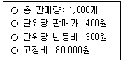
78. (주)산단의 20×4년 매출액순이익률 10%, 총자본순이익률 20%일 때, 총자산회전기간은?
79. 투자소요자금의 조달방법에 관계없이 동일한 주당순이익을 얻을 수 있는 영업이익수준은?
80. 현금흐름할인(DCF)모형으로 기업가치를 평가할 때 옳지 않은 것은?
81. 자기자본과 비유동부채가 비유동자산에 투입되어 있는 정도를 측정하는 비율은?
82. 월(A. Wall)의 지수법에서 가중치가 가장 높은 두 비율은?
83. 기업의 이해관계자별 경영분석의 목적으로 옳지 않은 것은?
84. BCG매트릭스에 관한 설명으로 옳지 않은 것은?
85. 경영분석 방법에 관한 설명으로 옳지 않은 것은?
86. 제품수명주기별 특징으로 옳은 것을 모두 고른 것은?
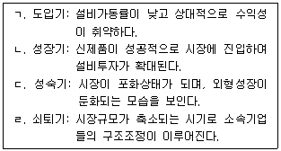
87. 기업이 성장하기 위한 조건으로 옳지 않은 것은?
88. 경영부문별 기업진단분야의 연결이 옳지 않은 것은?
89. 경영진단 원칙에 관한 설명으로 옳지 않은 것은?
90. 레버리지에 관한 설명으로 옳지 않은 것은?
91. 현금흐름표에서 영업활동으로 인한 현금흐름에 해당하는 것은?
92. 가산법에 의한 부가가치의 구성요소가 아닌 것은?
93. 기업의 생산성 평가를 위한 재무비율에 해당하는 것을 모두 고른 것은?
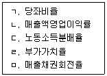
94. 포터(M. Porter)의 산업구조분석 특징에 관한 설명으로 옳은 것은?
95. 경영분석에서 활용되는 자료 중 회계자료에 해당하는 것은?
96. 한국채택국제회계기준(K-IFRS)에서 제시하고 있는 재무제표에 해당하지 않는 것은?
97. 재무상태표의 자본잉여금에 해당하는 항목을 모두 고른 것은?
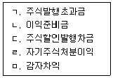
98. 재무상태표의 총자산 또는 손익계산서의 매출액을 100%로 하여 각 항목의 구성비를 백분율로 표시한 재무제표에 해당하는 것은?
99. 재무상태표 항목으로만 구성된 정태비율에 해당하는 것은?
100. 재무비율에 관한 설명으로 옳지 않은 것은?
5과목: 조사방법론
101. 조사원 교육에 관한 설명으로 옳은 것은?
102. 단순선형회귀분석에 관한 설명으로 옳은 것은?
103. 통계적 가설검증에 관한 설명으로 옳지 않은 것은?
104. 신뢰도와 타당도에 관한 설명으로 옳지 않은 것은?
1⑤. 연구자 A는 근로자의 근무기간과 직무만족과의 관계를 알아보고자 한다. 사내 근로자 1,000명을 대상으로 근무기간은 입사 후 조사시점까지의 개월 수로, 직무만족은 5점 리커트형 척도를 활용하여 조사하였다. 원자료를 활용할 경우 분석방법은?
106. 다음 중 유사실험 설계에 해당하는 것은?
107. 패널조사에 관한 설명으로 옳은 것은?
108. 다음 사례에 나타난 설명으로 옳지 않은 것은?
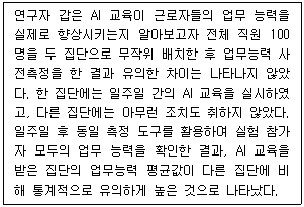
109. 순수실험설계에 관한 설명으로 옳은 것을 모두 고른 것은?
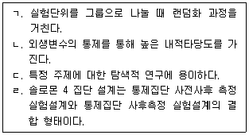
110. 자료수집방법들의 일반적 특성에 관한 설명으로 옳지 않은 것은?
111. 설문지 작성의 일반적 방법으로 옳은 것은?
112. 다음이 설명하고 있는 척도는?
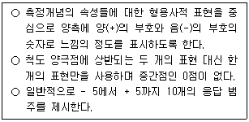
113. 측정을 위한 척도유형 4가지 중, ( )에 들어갈 용어를 순서대로 옳게 연결한 것은?
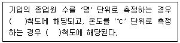
114. 설문지의 질문 순서를 결정하는 일반적인 원칙으로 옳지 않은 것은?
115. 모집단의 구성원이 표본으로 추출될 확률을 사전에 알 수 있는 상태에서 표본을 추출하는 방법으로 옳지 않은 것은?
116. A백화점의 전체 멤버십 회원은 여성 70 %, 남성 30 %로 구성되어 있다. 한편, 남ㆍ여 회원 각각은 수도권거주 40 %, 비수도권거주 60 %로 구성되어 있다. A백화점에서 멤버십 회원 대상의 만족도 조사를 위해 모집단의 성별과 거주지 비율을 반영한 할당표본추출방식으로 500명의 표본을 추출하였을 때, 표본에 포함되어 있는 여성 수도권 고객의 수(a)와 남성 비수도권 고객의 수(b)는?
117. 모집단의 평균 추정을 위한 표본의 크기에 관한 설명으로 옳지 않은 것은?
118. 전수조사와 표본조사에 관한 설명으로 옳지 않은 것은?
119. 인과관계 연구 설계 시 혼란변수(confounding variable)를 통제하는 방법으로 옳지 않은 것은?
120. 마케팅 부서에서 자사 제품의 만족도가 고객충성도에 미치는 영향이 브랜드 인지도에 따라 달라지는지 조사하려고 한다. 이 때 브랜드 인지도의 변수 유형은?
121. 종단연구 중 코호트 조사에 해당하는 것은?
122. 가설 설정 시 기본 조건으로 옳지 않은 것은?
123. 영화 속 등장인물들의 연령에 대한 분석을 진행할 때 분석단위(unit of analysis)는?
124. 다음에 나타난 논리적 추론과정은?
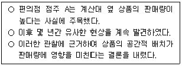
125. 과학적 연구방법이 갖추어야 할 요건으로 옳지 않은 것은?